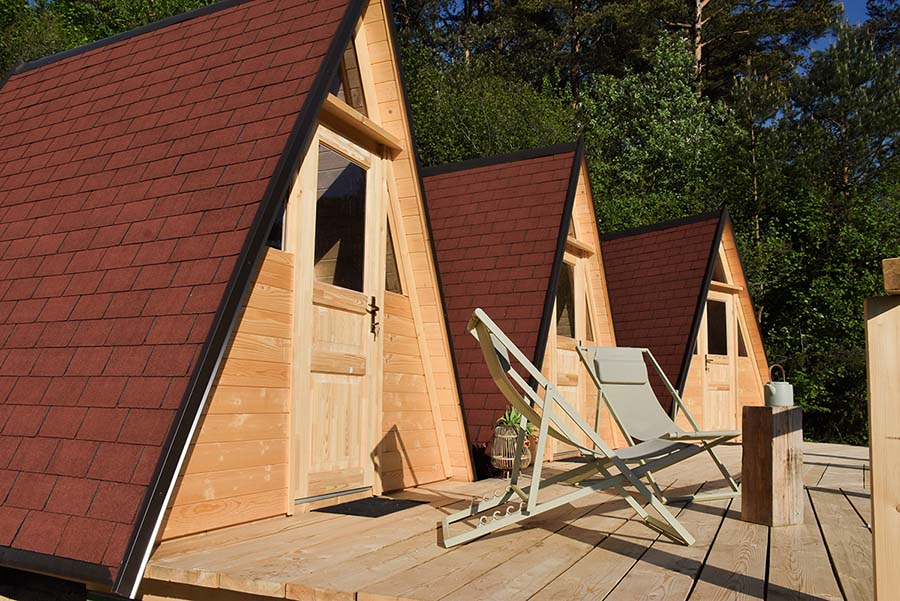
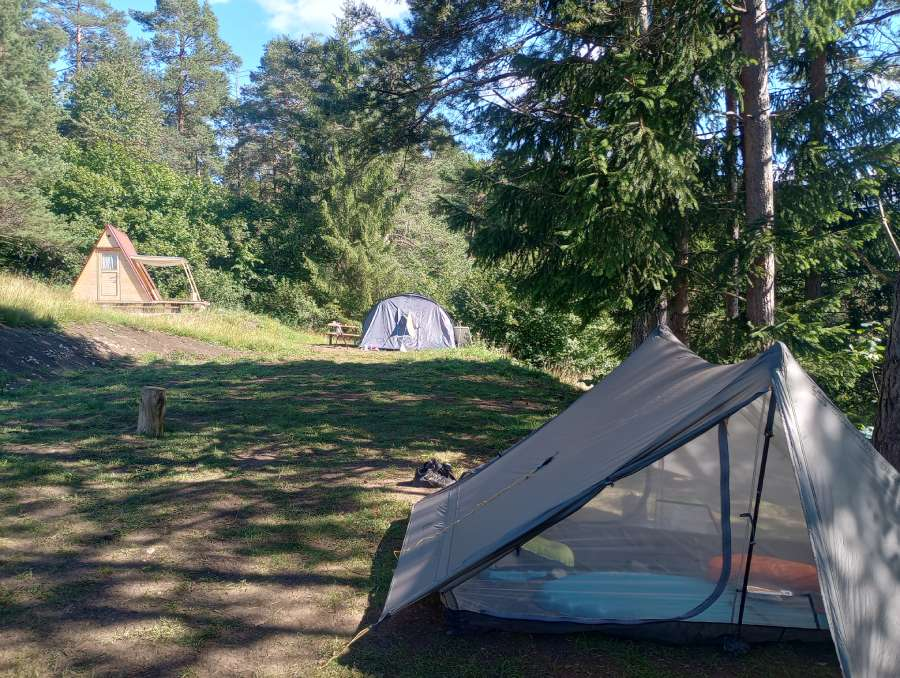
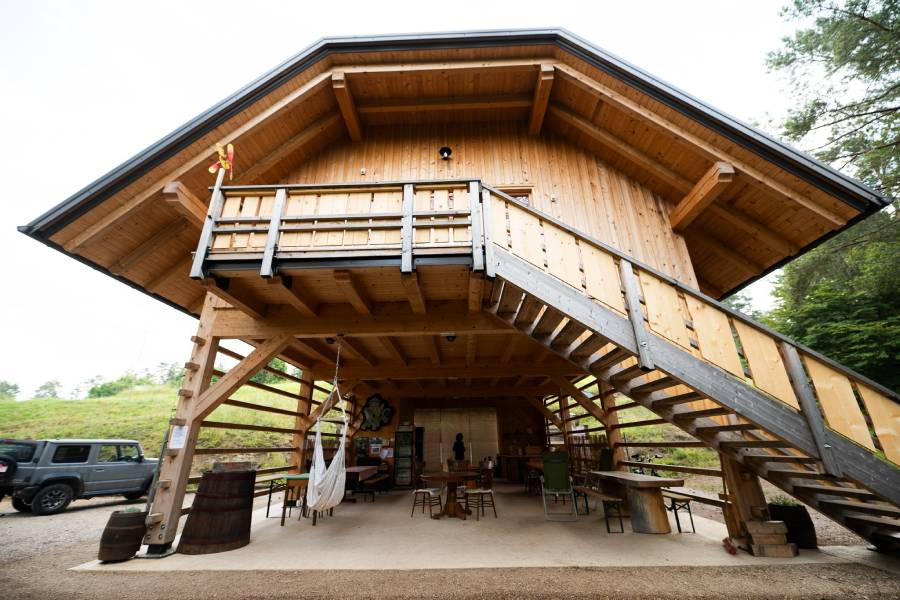

Leseni šotori
02.13 × 2trije šotori za po dve osebi
Sklop treh lesenih šotorov na najvišji terasi kampa, s skupno teraso.
Napolnite se z energijo gozda
Vrh 23
Stari trg pri Ložu
Vrh pri Starem trgu pri Ložu
V mansardi kozolca lahko spite na običajnih posteljah ali na senu.
Pokličite Matejo in Bena064 191 634
Telefon
064 191 634E-pošta
Recepcija
Vsak dan 18.00–20.00, takrat poteka prijava in odjava. V kampu ni stalno prisotnega osebja.
Rezervacija
»Kamp je ravno prav oddaljen od vasi, da imate občutek, da ste nastanjeni sredi gozda.«Kamp Beli gaber

Od drevesne hiške do terase za šotor. Opremljena kuhinja v pritličju kozolca je skupna za vse goste.

3 × 2trije šotori za po dve osebi
Sklop treh lesenih šotorov na najvišji terasi kampa, s skupno teraso.
2odrasla
Majhna drevesna hiška dimenzij 2 × 2,5 metra, s posteljo ter mizico in klopjo.

2osebi
Lesena hiška v obliki črke A. Del strehe se dvigne, da se sprostite ob pogledu na gozd.

2 + 2odrasla, dojenček in majhen otrok
Večja različica hiške Maja z ležiščem širine 180 cm in otroško posteljico.

12ležišč v štirih kotičkih
Mansarda kozolca s posteljami ali senom. Več v rubriki 03
10+večjih šotorov na štirih terasah
Štiri večje terase za postavitev šotorov. Parkirate pod kampom.

4–5avtodomov
Manjši prostor ob recepciji, brez priklopa na vodo in elektriko.

12ležišč v mansardi kozolca
»Prostor je urejen v 4 manjše intimne kotičke, v vsakem lahko prespijo 3 osebe.«Opis kozolca, Kamp Beli gaber

V mansardi kozolca izberete običajno posteljo ali seno. Posteljnina je vključena, prostor ima elektriko, ni pa ogrevan.
V pritličju kozolca je skupna kuhinja za vse goste, s kuhalnimi ploščami, hladilnikom in priborom za kuhanje. Kopalnica je v sosednjem objektu.

Vrh je majhna vas Matejinega otroštva. Tu sta si z Benom postavila dom, prazen hlev na kmetiji Matejinih staršev pa je postal dom njunih konj. Hišo je napolnil otroški smeh, pa en lajajoči in en mjavkajoči kosmatin.
Odločitve za življenje na Vrhu jima ni žal: tu se umirita v tišini, s pogledom na širne gozdove. Zato sta v kamp povabila goste, ki cenijo naravo in želijo spoznati ta del Slovenije.
»Želiva ohraniti podeželje in našo malo vas živo.«Mateja in Beno
Krožna pot se začne kar v kampu.
Vzpon na najvišji nealpski vrh Slovenije (1796 m).
Vodna jama z več možnostmi ogleda.
Eno največjih presihajočih jezer v Evropi, s tematskimi potmi.
Življenje zadnjih lastnikov gradu in grajski park.
Krožna pot z dvema naravnima mostovoma.
Gozdne ceste in poljske poti proti Cerkniškemu jezeru ali Gorskemu kotarju.